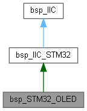
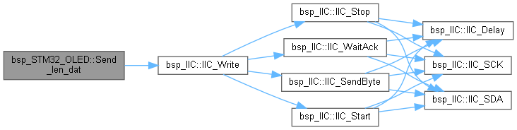
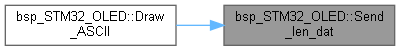

一个OLED设备,基于STM32使用IIC总线 更多...
#include <bsp_OLED_STM32.h>
类 bsp_STM32_OLED 继承关系图:

bsp_STM32_OLED 的协作图:

Public 成员函数 | |
| bsp_STM32_OLED (bsp_IIC_STM32 &IICS) | |
| bsp_STM32_OLED (GPIO_TypeDef *GPIOx_SCK, uint16_t GPIO_Pin_SCK, GPIO_TypeDef *GPIOx_SDA, uint16_t GPIO_Pin_SDA) | |
| void | Init (void) |
| OLED初始化 初始化显示屏的设置 更多... | |
| void | Column_set (u8 column) |
| 光标定位行中的位置 更多... | |
| void | Page_set (u8 page) |
| 光标定位于一页 更多... | |
| void | Clear (u8 dat) |
| 全页绘制 更多... | |
| void | Picture_display (const u8 *ptr_pic) |
| OLED绘图 更多... | |
| void | Picture_ReverseDisplay (const u8 *ptr_pic) |
| OLED反向绘图 更多... | |
| void | Draw_ASCII (u32 H, u32 V, u8 word) |
| OLED绘制ASCII字符 更多... | |
| void | Send_dat (u8 dat) |
| 发送一条数据给OLED 更多... | |
| void | Send_cmd (u8 cmd) |
| 发送一条指令给OLED 更多... | |
| void | Send_len_dat (u8 *dat, u32 len) |
| 发送一串定长指令给OLED 更多... | |
额外继承的成员函数 | |
 Protected 成员函数 继承自 bsp_IIC_STM32 Protected 成员函数 继承自 bsp_IIC_STM32 | |
| u8 | IIC_SCK (u8 var) |
| 控制SCK管脚口 更多... | |
| u8 | IIC_SDA (u8 var) |
| 控制SDA管脚口 更多... | |
| virtual void | IIC_Delay (void) |
| 时序中的延时 在此处短暂延时 更多... | |
| bsp_IIC_STM32 (GPIO_TypeDef *GPIOx_SCK, uint16_t GPIO_Pin_SCK, GPIO_TypeDef *GPIOx_SDA, uint16_t GPIO_Pin_SDA) | |
| 构造STM32的IIC软件发生器 更多... | |
| virtual u8 | IIC_SCK (u8 var)=0 |
| 控制SCK管脚口 更多... | |
| virtual u8 | IIC_SDA (u8 var)=0 |
| 控制SDA管脚口 更多... | |
| virtual void | IIC_Delay (void)=0 |
| 时序中的延时 在此处短暂延时 更多... | |
| void | IIC_WriteOneByte (u8 id, u8 addr, u8 dat) |
| 使用总线发送一个字节数据 更多... | |
| u8 | IIC_ReadOneByte (u8 id, u8 addr) |
| 使用总线接收一个字节数据 更多... | |
| void | IIC_Write (u8 id, u8 addr, u8 *dat, u32 len) |
| 使用总线发送定长数据 更多... | |
| void | IIC_Read (u8 id, u8 addr, u8 *dat, u32 len) |
| 使用总线接收定长数据 更多... | |
| void | IIC_Start (void) |
| 发送IIC开始信号 更多... | |
| void | IIC_Stop (void) |
| 发送IIC停止信号 更多... | |
| void | IIC_SendAck (u8 ackbit) |
| 发送IIC应答信号 更多... | |
| u8 | IIC_WaitAck (void) |
| 等待应答信号 更多... | |
| void | IIC_SendByte (u8 byt) |
| 发送IIC一个字节信号 更多... | |
| u8 | IIC_RecByte (void) |
| 接收IIC一个字节信号 更多... | |
| Protected 属性 继承自 bsp_IIC_STM32 | |
| GPIO_TypeDef * | GPIOx_SCK |
| uint16_t | GPIO_Pin_SCK |
| GPIO_TypeDef * | GPIOx_SDA |
| uint16_t | GPIO_Pin_SDA |
详细描述
一个OLED设备,基于STM32使用IIC总线
在文件 bsp_OLED_STM32.h 第 81 行定义.
构造及析构函数说明
◆ bsp_STM32_OLED() [1/2]
|
inline |
在文件 bsp_OLED_STM32.h 第 84 行定义.
◆ bsp_STM32_OLED() [2/2]
|
inline |
在文件 bsp_OLED_STM32.h 第 88 行定义.
成员函数说明
◆ Clear()
| void bsp_STM32_OLED::Clear | ( | u8 | dat | ) |
◆ Column_set()
| void bsp_STM32_OLED::Column_set | ( | u8 | column | ) |
◆ Draw_ASCII()
◆ Init()
| void bsp_STM32_OLED::Init | ( | void | ) |
◆ Page_set()
| void bsp_STM32_OLED::Page_set | ( | u8 | page | ) |
◆ Picture_display()
| void bsp_STM32_OLED::Picture_display | ( | const u8 * | ptr_pic | ) |
◆ Picture_ReverseDisplay()
| void bsp_STM32_OLED::Picture_ReverseDisplay | ( | const u8 * | ptr_pic | ) |
◆ Send_cmd()
| void bsp_STM32_OLED::Send_cmd | ( | u8 | cmd | ) |
◆ Send_dat()
| void bsp_STM32_OLED::Send_dat | ( | u8 | dat | ) |
◆ Send_len_dat()
发送一串定长指令给OLED
- 参数
-
*dat 要发送的指令头 len 指令长度
在文件 bsp_OLED_STM32.cpp 第 61 行定义.
函数调用图:

这是这个函数的调用关系图:

该类的文档由以下文件生成:
- D:/gitt/MicrochipFor32/bsp_Device/bsp_OLED_STM32.h
- D:/gitt/MicrochipFor32/bsp_Device/bsp_OLED_STM32.cpp